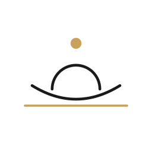
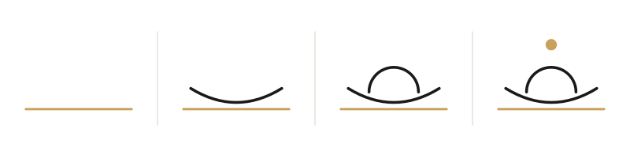
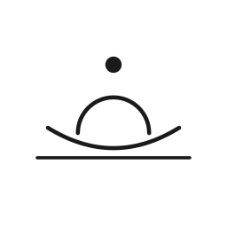

Hero — flagship mark on ivory

Claim: The adventurous probe: the sanctum's front view distilled to three strokes and a point — drop, dome, lotus cup, waterline. No enclosure, no ornament; the holiest possible mark that could still hang in a modern gallery. The extreme reduction (drop over waterline) doubles as the brand's section divider.





